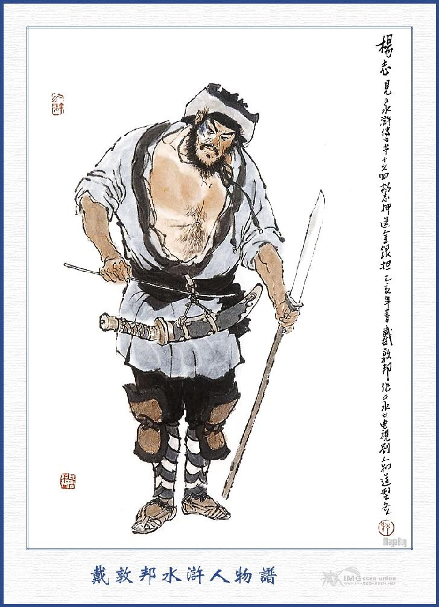
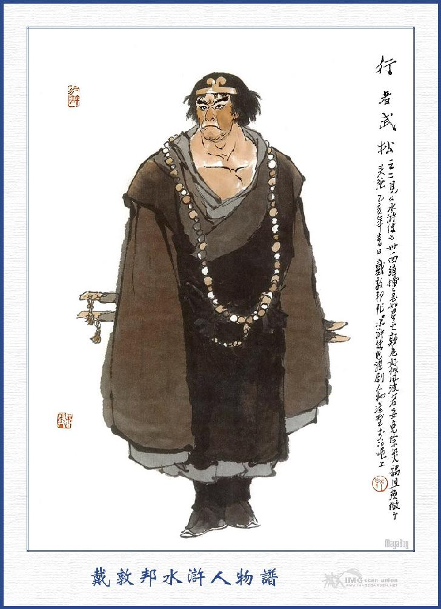
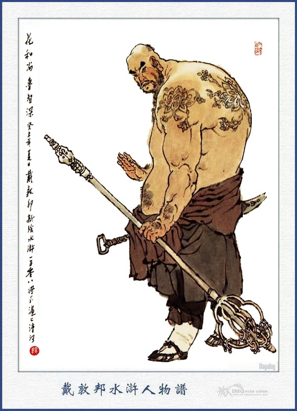
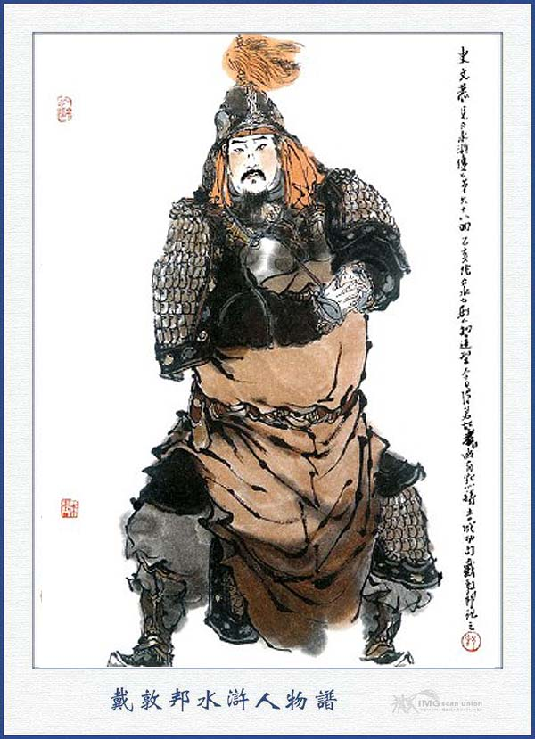
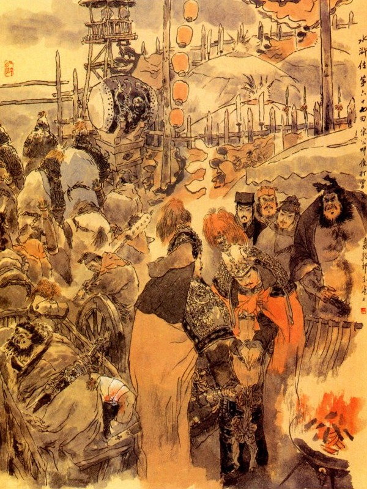

Bấy giờ Đoàn Cảnh Trụ nói với bọn Lâm Xung rằng:
- Tôi cùng Dương Lâm, Thạch Tú đi sang mạn Bắc, chọn mua được hai trăm con ngựa rất khoẻ và đẹp, bất đồ về đến địa hạt Thanh Châu, gặp một người tên là Hiểm Đạo Thần Úc Bảo Tứ, tụ hơn hai trăm người cướp lấy cả ngựa, đem giải về Tăng Đầu Thị, còn Dương Lâm, Thạch Tú thì không biết bạt đi đâu mất. Bởi vậy tôi phải trốn về đây báo cho sơn trại biết.
Lâm Xung nghe nói liền đưa về sơn trại, để nói cùng Tống Công Minh, khi về tới Trung Nghĩa Đường, Quan Thắng dẫn Đan Đình Khuê, Ngụy Định Quốc vào chào Tống Giang cùng các Đầu Lĩnh rồi Lý Quỳ đem các chuyện giết Hàn Bá Long gặp Tiêu Đĩnh, Bào Húc đi đánh Lăng Châu thuật cho mọi người nghe. Tống Giang nghe nói lấy làm mừng vô hạn.
Hồi lâu các Đầu Lĩnh đương ngồi yến ẩm với nhau, Đoàn Cảnh Trụ lại kể chuyện mất ngựa cho Tống Giang, Tống Giang nghe nói cả giận mà rằng:
- Ngày trước chúng đã cướp ngựa của ta, sau Tiều Thiên Vương cũng bị bắn chết vì tay chúng, thù ấy vẫn chưa báo được. Nay chúng lại dám vô lễ đến thế, nếu ta không đem binh đi đánh, tất thiên hạ chê cười ta đó.
Ngô Dụng tiếp luôn rằng:
- Hiện nay ngày xuân ấm áp, chính hợp cho sự hành binh, vậy ta nên đi đánh ngay cho vui, ngày trước Tiều Thiên Vương bị thua là vì mất địa lợi, vậy ngày nay ta nên dùng trí mà đánh mới được. Nay hãy cho Thời Thiên đến đó treo tường khoét dậu, thám thính xem sao rồi về đây ta sẽ liệu.
Thời Thiên vâng mệnh ra đi.
Cách ba bốn hôm sau bỗng thấy Dương Lâm, Thạch Tú trốn về sơn trại, kể lại Sử Văn Cung rất là vô lễ, thường nói khoác thế nào cũng không chịu sống với bọn Lương Sơn. Tống Giang nghe nói toan khởi binh đi ngay lập tức.
Ngô Dụng can rằng:
- Hãy đợi Thời Thiên về rồi sẽ khởi binh, có đi đâu mà vội?
Tống Giang vẫn hầm hầm tức giận, chỉ nóng báo cừu, không sao chịu được liền sai Đới Tung đi thám thính mau mau để cho chóng việc. Đới Tung vâng lệnh đi mấy hôm rồi trở về trước Thời Thiên mà nói với Tống Giang rằng:
- Bọn Tăng Đầu Thị muốn báo thù cho phủ Lăng Châu, hiện nay đã đóng đại trại ở chợ Tăng Đầu và đặt trướng Trung quân ở chùa Pháp Hoa, cắm cờ mấy trăm dặm, không biết lối nào mà tiến được.
Ngô Dụng nghe nói, còn do dự chưa biết lập kế ra sao. Sáng hôm sau chợt thấy Thời Thiên về báo rằng:
- Chúng tôi đi đến chợ Tăng Đầu, đã dò thám hết, rất kỹ tình thế của chúng. Hiện nay chúng chia năm trại, trước mặt chợ Tăng Đầu có hơn ba nghìn người coi giữ cửa thôn, trong trại có Sử Văn Cung coi giữ trại. Trại bên Bắc có Tăng Đồ cùng Phó giáo sư Tô Định, trại bên Nam có Tăng Mật, trại bên Tây có Tăng Sách, trại bên Đông có Tăng Khôi, cùng người cha là Tăng Lộng coi giữ. Còn Úc Bảo Tử người ở Thanh Châu thì cao một trượng, lưng lớn ba ôm, biệt hiệu là Hiểm Đạo Thần Úc Bảo Tử, đã cướp lấy ngựa của ta hiện còn nuôi ở chùa Pháp Hoa đó.
Ngô Dụng nghe nói liền tụ hội các tướng đến mà bàn rằng:
- Đằng ấy chúng có năm trại thì ta đây chia binh ra làm năm đạo để đánh.
Lư Tuấn Nghĩa đứng dậy nói rằng:
- Lư mỗ nhờ ơn các ngài cứu cho lên núi, chưa có chút gì để đền ơn, vậy ngày nay xin ra trước trận để đánh chẳng hay các ngài có thuận cho không?
Tống Giang nghe nói liền hỏi Ngô Dụng rằng:
- Viên Ngoại có lòng đi giùm, vậy có thể mời Viên Ngoại đi tiền bộ được chăng?
Ngô Dụng đáp:
- Viên Ngoại mới đến đây chưa ra chiến trận, đường lối hiểm trở khó lòng dò biết, không thể nào đi tiền bộ tiên phong được. Vậy xin Viên Ngoại dẫn một chi quân nấp ở giữa khoảng Bình Xuyên rồi nghe hiệu súng trung quân mà kéo đến tiếp ứng. Thế là tiện hơn.

DƯƠNG CHÍ
Tống Giang nghe nói cả mừng bèn cho Lư Viên Ngoại cùng Yến Thanh dẫn năm trăm quân bộ đến nấp ở con đường nhỏ Bình Xuyên mà nghe hiệu. Đoạn rồi cùng nhau cắt đặt năm đạo quân để đi đánh: Toán thứ nhất mã quân Đầu Lĩnh là Tích Lịch Hoả Tần Minh, Tiểu Lý Quảng Hoa Vinh cùng Phó tướng Đặng Phi, Mã Lân dẫn ba nghìn quân đánh trại chính Nam. Toán thứ nhì bộ quân Đầu Lĩnh Hoa Hoà Thượng Lỗ Trí Thâm. Hành giả Võ Tòng cùng phó tướng Khổng Minh, Khổng Lượng dẫn ba nghìn quân đánh trại chính Đông. Toán thứ ba mã quân Đầu Lĩnh Thanh Diện Thú Dương Chí, Cửu Văn Long, Sử Tiến, cùng phó tướng Trần Đạt, Dương Xuân dẫn ba nghìn quân đánh trại chính Bắc. Toán thứ tư bộ quân Đầu Lĩnh Mỹ Nhiêm Công Chu Đồng, Sáp Sí Hổ Lôi Hoành cùng phó tướng Trâu Uyên, Trâu Nhuận dẫn ba nghìn quân đánh trại chính Tây. Còn toán thứ năm thì Đô Đầu Lĩnh Tống Giang, quân sư Ngô Dụng, Công Tôn Thắng, cùng các phó tướng là: Lã Phương, Quách Thịnh, Giải Trân, Giải Bảo, Đới Tung, Thời Thiên dẫn năm nghìn quân đánh trại chính giữa. Hắc Toàn Phong Lý Quỳ, Hỗn Thế Ma Vương Phàn Thụy cùng phó tướng là Hạng Sung, Lý Cổn dẫn năm nghìn quân làm hợp hậu. Còn các Đầu Lĩnh khác đều ở nhà coi trại.
Khi cắt đặt xong, năm đạo quân đều xuống núi chia đường mà thẳng đến đánh chợ Tăng Đầu.
Bên kia Tăng Trưởng Quan nghe báo quân mã Tống Giang sắp kéo đến, bèn mời giáo sư Sử Văn Cung và Tô Định đến để bàn việc binh. Sử Văn Cung bàn rằng:
- Đám Lương Sơn Bạc phần nhiều là binh cường tướng mạnh, ta nên dùng kế đào hầm thì thế nào cũng tróc nã được chúng. Tăng Trưởng Quan khen phải, liền sai trang khách đem mai cuốc ra đào mấy mươi hàng hầm hố ở trong thôn, bên trên phủ qua lượt đất rồi cho quân binh nấp bốn bên đường để đón bắt. Lại sai đào mấy mươi hàng hầm hố nữa về phía Bắc Tăng Đầu Thị để đợi.
Bên kia khi quân mã Tống Giang đã bắt đầu khởi hành, Ngô Dụng lại sai Thời Thiên dấn mau đi trước để dò đường. Cách mấy bữa Thời Thiên trở lại bảo rằng:
- Đường vào các trại Nam Bắc ở Tăng Đầu thì đều đào hầm hố rất nhiều, nếu quân mã ta lỡ mắc vào đó thì tất là nguy mất.
Ngô Dụng nghe nói cả cười mà rằng:
- Kế ấy thì lấy chi làm lạ! Nói đoạn liền truyền cho quân mã cứ tiến lên để đánh.
Một hôm vào khoảng giờ ngọ, quân mã kéo gần đến Tăng Đầu Thị, chợt thấy có một người khăn xanh bào trắng cưỡi ngựa đeo nhạc xủng xoảng tay cầm đoản thương đi đến. Tiền đội trông thấy toan kéo quân đuổi đánh. Ngô Dụng liền ngăn lại rồi truyền lệnh năm đạo quân mã đều chia mạn hạ trại, đào hào đắp lũy rắc chông rào dậu phòng bị rất là nghiêm mật.
Người lại truyền cho Thời Thiên ăn mặc giả làm quân lính để dò xét xem các nơi hầm hố tất cả có mấy chỗ, cách xa trại quân chừng độ bao nhiêu và ghi nhớ lấy dấu hiệu để về báo. Thời Thiên vâng lệnh đi xét một ngày rồi về báo rõ ràng dấu tích các nơi hầm hố cho Ngô Dụng biết.
Ngày hôm sau Ngô Dụng truyền lệnh cho tiền quân chia làm hai đội đem đủ các đồ mai cuốc và xe hơn một trăm xe cỏ khô củi nỏ đi giấu ở trong quân. Đoạn rồi truyền lệnh cho các Đầu Lĩnh cứ đến giờ Tỵ hôm sau thì đám quân bộ hai đường Đông Tây tiến đánh, còn Dương Chí, Sử Tiến ở bên Bắc thì phải dẫn quân mã ra đó rồi đánh trống khua cờ, hư trương thanh thế mà không cho tiến lên. Khi phân phát xong rồi các tướng đều y lệnh để đợi thi hành.
Về phần Sử Văn Cung khi đã đào xong các hầm hố chỉ đợi cho Tống Giang kéo quân mã sấn vào là thế nào cũng sa xuống hố mà tóm bắt được cả. Chợt đâu đến giờ tỵ nom thấy ở trước trại có hiệu súng nổi lên rồi có đại đội binh mã kéo đến mạn nam, đông như kiến cỏ. Rồi sau thấy trại bên Đông vào báo rằng:
- Có một lão hoà thượng múa cây thiền trượng và một người hành giả múa hai khẩu giới đao, đánh cả đằng trước đằng sau trại.
Sử Văn Cung nghe báo liền nói rằng:
- Hai tên ấy chừng là Lỗ Trí Thâm cùng Võ Tòng ở Lương Sơn Bạc hẳn.

VÕ TÒNG

LỖ TRÍ THÂM
Nói đoạn lại sợ sức Tăng Khôi không chống nổi, bèn sai người ra Đông trại để giúp sức. Chợt lại thấy Tây trại vào báo: Có một người râu dài và một người mặt tía, trên cờ có đề chữ "Mỹ Nhiêm Công Chu Đồng" và "Sáp Sí Hổ Lôi Hoành", kéo quân đến đánh rất gấp, Sử Văn Cung nghe báo lại sai người sang giúp sức với Tăng Sách ở Tây trại, bỗng lại nghe thấy trước Trại có hiệu súng nổi lên. Sử Văn Cung vẫn lặng yên không ra tiếp ứng, chỉ đợi cho quân mã bọn kia sa xuống hố rồi sẽ ra bắt, đằng kia Ngô Dụng đem quân lần theo dõi sau núi chia làm hai đường kéo vào đến trại. Bấy giờ đám tiền quân của Sử Văn Cung còn cấp về việc coi trại, không dám rời đi, còn đám phục binh thì vẫn dàn hàng mà nấp ở hai bên hầm hố phía trước, Ngô Dụng kéo quân tới nơi liền đánh đám phục binh ngã sấp cả xuống hầm hố.
Sử Văn Cung thấy vậy, kéo binh ra để đuổi. Ngô Dụng liền cầm roi trỏ trung quân đẩy trăm xe cỏ, kéo ra nhất tề phóng lửa để đốt. Quân mã Sử Văn Cung kéo tới nơi, bị lửa đốt ngăn đường lại, đành phải kéo nhau trở lại. Khi đó Công Tôn Thắng đứng ở trong trận, cầm kiếm làm phép rồi bỗng nổi một trận gió to, cuốn khói lửa đưa vào lối cửa bên Nam làm cho gác canh cùng dậu vách cùng bị thiêu đốt cháy cả. Đoạn rồi đôi bên cùng khua chiên thu quân rồi Sử Văn Cung lập tức cho sửa sang cửa trại lại nguyên như cũ.
Ngày hôm sau Tăng Đồ bàn với Sử Văn Cung rằng:
- Nếu không chém được đầu giặc thì không thể nào mà triệt đi được. Vậy hôm nay xin giáo sư coi trại, để tôi ra đánh một trận xem sao.
Nói đoạn liền cưỡi ngựa dẫn quân ra trận khơi đánh. Tống Giang ở Trung quân, liền dẫn Lã Phương ra trước trận để đón. Khi ra tới cửa trận, thấy Tăng Đồ hầm hầm giận dữ. Tống Giang liền cầm roi mà nói rằng:
- Ai ra bắt thằng kia cho ta, để báo thù khi trước.
Nói dứt lời thì Tiểu Ôn hầu Lã Phương vác Thiên Phương Họa Kích, vỗ ngựa ra đánh Tăng Đồ. Đôi bên đánh nhau chừng hơn ba mươi hiệp thì Lã Phương có phần hơi núng, không địch nổi với Tăng Đồ, đao pháp đã hơi rối loạn. Quách Thịnh thấy vậy liền vỗ ngựa cùng múa Thiên Phương Họa Kích ra để cùng đánh Tăng Đồ.
Ba người ba ngựa quần nhau ở trước trận một lúc rồi bỗng dưng ba thứ quân khí, bị vướng ngù vào với nhau, không sao mà dằng ra được. Tiểu Lý Quảng Hoa Vinh đứng trong trận thấy vậy, bèn sấn ngựa ra tay tả co giây cung, tay giữa đặt tên nhằm giữa Tăng Đồ để bắn. Khi đó Tăng Đồ đã rút được cây thương ra mà hai cây kích của Lã Phương, Quách Thịnh còn soắn sít lấy nhau chưa sao gỡ được. Tăng Đồ thấy thế, giơ thương toan đánh thì vừa hay mũi tên của Hoa Vinh đã tới, bắn trúng ngay vào vai Tăng Đồ ngã lăn xuống ngựa, Lã Phương, Quách Thịnh thấy Tăng Đồ ngã, chém cho một nhát chết ở giữa trận. Quân sĩ Tăng gia vội vàng phi ngựa báo cho Sử Văn Cung và đến Trung trại báo cho Tăng Trưởng Quan biết.
Tăng Trưởng Quan nghe báo lấy làm thương xót mà khóc nức nở lên một lúc, bấy giờ Tăng Thăng đứng ở bên cạnh nghe nói anh chết, liền gọi người lấy ngựa ra để đi đánh báo thù cho anh. Tăng Trưởng Quan ngăn giữ không được, đành phải để cho Tăng Thăng đi. Nguyên Tăng Thăng là một tay võ nghệ cao cường, khiến hai khẩu phi đao không ai hề dám gần đến. Khi đó chàng vác đao lên ngựa, đi ra đến tiền trại, Sử Văn Cung cũng ngăn lại mà rằng:
- Tiểu Tướng Quân không nên vội ra. Bên trận Tống Giang trí dũng rất nhiều, khó lòng địch nổi, vậy cứ ý tôi, thiết tưởng ta nên giữ vững năm trại, cho người báo với Lăng Châu để tâu với triều đình, đem nhiều binh mã chia làm hai đường ra đánh Lương Sơn và cứu ứng ở đây thì bấy giờ mới có thể lập công được.
Đương khi nói chuyện thì thấy phó giáo sư là Tô Định ở Bắc trại cũng đến đó. Tô Định nghe lời Sử Văn Cung cũng lấy làm phải mà nói rằng:
- Ngô Dụng ở Lương Sơn Bạc là một người lắm mưu nhiều kế, không thể coi khinh được, ta chỉ nên giữ vững lấy trại đợi cứu binh đến rồi ta sẽ liệu.
Tăng Thăng kêu lên rằng:
- Nó giết Ca Ca ta, oán thù ấy tất là phải báo, nay nếu để cho nó tự do hành động mà không trị đi thì sau này còn làm gì được nữa?
Sử Văn Cung cố can không được. Tăng Thăng liền hăm hở lên ngựa dẫn mấy mươi quân kỵ ra trận khơi đánh. Tống Giang liền truyền cho Tần Minh ra đón đánh Tăng Thăng, Tần Minh vâng lệnh lên đường sắp đi ra thì thấy có người mình đen chùi chũi, cởi trần trùng trục, múa song phủ xồng xộc chạy thẳng đến trại Tăng Thăng để đánh. Đám quân sĩ của Tăng Thăng trông thấy liền bảo với Tăng Thăng rằng:
- Người ấy là Hắc Toàn Phong ở Lương Sơn Bạc đó.
Tăng Thăng nghe nói liền truyền cho quân sĩ lấy cung tên ra bắn. Lý Quỳ đang hăng hái vô ý bị một mũi tên bắn vào chân ngã lăn ra trước trận. Quân mã của Tăng Thăng đều xông ra để bắt. Bên kia Tần Minh, Hoa Vinh phóng ngựa ra để cứu rồi Mã Lân Đặng Phi, Lã Phương, Quách Thịnh đều nhất tề xông ra cứu Lý Quỳ đem về bản trận. Tăng Thăng thấy bên trận Tống Giang đông người, liền đem quân trở về mà không dám đánh nữa.

SỬ VĂN CUNG
Ngày hôm sau, Sử Văn Cung cùng Tô Định đều định đóng binh yên giữ, song Tăng Thăng nóng ruột về việc báo cừu cho anh bèn cố giục Sử Văn Cung phải ra đối trận. Sử Văn Cung bất đắc dĩ phải đóng đai giáp, cưỡi con ngựa Thiên Lý Long Câu Chiếu Dạ Ngọc Sư Tử cướp được của Đoàn Cảnh Trụ khi trước mà xông ra để đánh.
Bên kia Tống Giang dẫn các tướng ra dàn trận để đón. Khi Tống Giang trông thấy con ngựa Ngọc Sư Tử thì trong lòng lấy làm căm tức, liền truyền lệnh cho tiền quân xông ra để đánh Sử Văn Cung. Tần Minh nghe lệnh bèn vỗ ngựa xông ra đối trận. Hai bên đánh nhau chừng hơn hai mươi hiệp, Tần Minh nghe hơi núng thế vội quay ngựa chạy về bản trận. Sử Văn Cung ra sức sấn lên cầm thương đâm vào chân Tần Minh một nhát ngã lăn xuống đất. Lã Phương, Quách Thịnh, Mã Lân, Đặng Phi thấy vậy đều xông ra liều chết cứu được Tần Minh về. Quân sĩ cả thua một trận. Tống Giang lui quân ra ngoài mươi dặm hạ trại rồi sai người xe Tần Minh về sơn trại phục thuốc và mật gọi Quan Thắng, Từ Ninh và Đan Đình Khuê, Ngụy Định Quốc xuống núi để giúp. Tống Giang đốt hương khấn trời đất quỷ thần xin một quẻ bói đưa cho Ngô Dụng xem. Ngô Dụng xem xong bảo với Tống Giang rằng:
- Phen này tất được thanh thoả không can chi cả. Duy đêm nay chúng sẽ vào cướp trại ta đây. Nếu vậy thì phòng bị trước đi mới được.
- Vâng xin Huynh trưởng cứ vững tâm truyền cho năm quân ngay bây giờ là được rồi.
Nói đoạn liền hạ lệnh cho quân mã các trại đều mai phục tất cả các nơi và để Giải Trân ở bên tả, Giải Bảo ở bên hữu, để đợi hiệu thi hành. Đêm hôm đó trời trong trăng sáng, Sử Văn Cung ngồi ở trong trại bàn với Tăng Thăng rằng:
- Quân giặc hôm nay bị thương mất hai tướng, chắc là trong lòng kinh khiếp, vậy ta nên thừa thế mà cướp trại thì tất là được nên công.
Tăng Thăng nghe nói liền gọi Tô Định ở Bắc trại, Tăng Mật ở Nam trại và Tăng Sách ở Tây trại đều dẫn quân đi cướp trại Tống Giang. Vào khoảng canh hai đêm hôm ấy quân mã đều im phắc, người mặc giáp mềm, ngựa bỏ vòng nhạc mà thẳng kéo ra đi.
Khi tới trại Trung quân của Tống Giang thấy bốn bên vắng vẻ không có một ai, bọn Tăng Thăng biết là có kế, liền quay ngựa kéo nhau lui ra. Chợt đâu thấy bên tả có Giải Trân, bên hữu có Giải Bảo rồi mặt sau có Tiểu Lý Quảng Hoa Vinh đều nhất tề xông ra để đánh. Tăng Sách lúng túng trong đêm tối mò, bị Giải Trân đâm cho một nhát phương xoa chết lăn xuống ngựa rồi phóng lửa nổi hiệu các quân đều ập vào để đánh. Bọn Sử Văn Cung hết sức cướp đường để chạy, mãi sau mới được thoát về trong trại. Tăng Trưởng Quan thấy Tăng Sách lại bị chết trong lòng lại càng thương cảm bội phần, ngày hôm sau liền bàn với Sử Văn Cung để viết giấy xin đầu hàng Tống Giang. Bấy giờ Sử Văn Cung cũng có điều chột dạ, không dám hung hăng, bèn tán thành việc đó rồi viết giấy sai người thẳng đem sang trại Tống Giang.
Tống Giang bắt được giấy, bóc ra xem thấy trong đó nói rằng:
- "Tôi chủ chợ Tăng Đầu, tên là Tăng Lộng, cúi lạy trình Tống Công Minh thống quân Đầu Lĩnh. Trước đây vì con tôi ngu dại, cậy khoẻ khoe tài làm càn làm dở cướp ngựa của ngài rồi sau Thiên Vương xuống núi, lại bị đứa tiểu tốt vi tri bắn tên ngầm mà hại tính mạng, điều đó thực là tội nặng muôn trùng, không dám có điều chi từ chối.
Song thiết nghĩ việc đó không phải là thiện ý của chúng tôi và đứa con ngu dại ngày nay cũng đã chết rồi, vậy tôi xin cả gan cho sứ mang thơ để cầu hoà cùng Thống Quân Đầu Lĩnh. Nếu ngài có rộng lòng thương tới, im việc can qua thì tôi đem cái số ngựa đã cướp khi xưa nộp trả lại ngài và xin dâng vàng bạc khao thưởng tam quân, để đôi bên khỏi phần thiệt hại. Lòng thành ý thực xin lượng xét cho".
Tống Giang xem thơ xong liếc mắt nhìn Ngô Dụng rồi nét mặt giận dữ hầm hầm, xé thơ mà mắng rằng:
- Bay giết Huynh trưởng ta, khi nào ta im đi được! Phen này tất phải quét sạch toàn hạt bay đi thì ta mới thoả.
Người đưa thơ nghe nói vậy sợ hãi run lên mà cúi rạp xuống đất.
Ngô Dụng liền can Tống Giang rằng:
- Huynh trưởng không nên nghĩ thế, chúng ta tranh nhau đây chẳng qua chỉ vì nghĩa khí mà thôi. Vậy nay Tăng Gia đã cho người đưa thơ sang cầu hoà, nếu ta còn chấp lòng căm giận mà bỏ mất đạo nghĩa thì sao cho tiện.
Nói đoạn liền sai viết thơ trả lời và thưởng cho người đưa thơ mười lạng bạc mà cho đem về. Người kia vâng lệnh đem thơ về trình. Tăng Trưởng Quan cùng Sử Văn Cung bóc thư ra xem trong thư nói:
"Lương Sơn Bạc Chủ Tướng là Tống Giang xin trả lời cho chủ chợ Tăng Đầu là Tăng Lộng biết: Từ xưa tới nay nước không tín tất mất, người không lẽ tất chết, của không nghĩa tất mất, tướng không mạnh tất thua, đó là lẽ trời đất thế. Lương Sơn Bạc đối với Tăng Đầu thì trước sau không có thù hằn, chỉ vì làm càn làm dở mà gây nên tai vạ ngày nay. Vậy nếu muốn giảng hoà thì phải trả lại các số ngựa đã cướp và đem nộp tên hung đồ cướp ngựa là Úc Bảo Tứ, cùng là tiền bạc khao quân sĩ rồi từ đây dốc lòng hoà thuận, không được sai lời. Nếu có một điều gì trái phép, bấy giờ ta sẽ liệu cho không còn phàn nàn được nữa".
Hai người xem xong lấy làm kinh sợ vô cùng. Sáng hôm sau Tăng Đầu lại cho người sang nói với Tống Giang rằng:
- Xin nộp Úc Bảo Tứ và xin cho mấy người đến để làm tin.
Tống Giang nghe nói liền truyền cho Thời Thiên, Lý Quỳ, Phàn Thụy, Hạng Sung, Lý Cổn theo sang trại Tăng Gia làm tin. Khi năm người ra đi Ngô Dụng gọi Thời Thiên ghé vào tai dặn thầm rằng:
- Nếu lỡ khi có biến thì cứ thế này mà làm.
Đoạn rồi năm người vâng lệnh ra đi. Khi sang đến trại Tăng Đầu, Thời Thiên dắt bốn người vào chào Tăng Lộng mà nói rằng:
- Chúng tôi vâng tướng lệnh Ca Ca, xin sang đây để làm tin.
Sử Văn Cung nói lên rằng:
- Ngô Dụng sai năm người đến đây, vị tất đã không có mưu kế gì?
Lý Quỳ nghe nói cả giận mà nắm lấy Sử Văn Cung toan đánh. Tăng Lộng vội vàng đứng dậy mà khuyên giải ra. Thời Thiên nói với hai người rằng:
- Lý Quỳ tuy là người thô mãng, song hiện là một người tâm phúc của Tống Công Minh, nay sai sang đây thì không còn điều gì đáng ngờ nữa.

Tăng Lộng cũng dốc lòng giảng hoà, nên chẳng nhắc gì đến lời của Sử Văn Cung nữa, liền sai đặt rượu đãi năm người rồi mới sang chùa Pháp Hoa, cho năm trăm quân vây giữ trước sau. Đoạn rồi cho Tăng Thăng đem Úc Bảo Tứ, cùng các lễ vật sang trại Tống Giang để giải hoà. Tống Giang nom thấy một xe tiền lụa và một đoàn ngựa đem đến, liền bảo với Tăng Thăng rằng:
- Ngựa này toàn là ngựa cướp chuyến sau, còn con ngựa Thiên Lý Long Câu Chiếu Dạ Ngọc Sư Tử cướp của Đoàn Cảnh Trụ chuyến trước, sao không thấy ở đây?
Tăng Thăng nói:
- Con ngựa hiện sư phụ Sử Văn Cung để cưỡi, nên chưa đem được đến đây.
- Nếu vậy phải viết giấy bảo mang sang đây mau.
Tăng Thăng bèn viết giấy cho người mang về trại, để đòi con ngựa Ngọc Sư Tử mang sang. Sử Văn Cung tiếp được giấy trả lời rằng:
- Con ngựa khác thì không dám tiếc, duy con ngựa ấy thì không thể nào mà đưa đi được.
Tống Giang nghe nói, lại sai người sang hỏi. Sau Sử Văn Cung đáp rằng:
- Muốn lấy con ngựa ấy thì phải lui quân ngay lập tức mới được.
Tống Giang thấy vậy, bàn định với Ngô Dụng, chưa biết kế sách ra sao. Chợt đâu có tin báo Lăng Châu với Thanh Châu dẫn hai đạo quân mã sắp tới nơi.
Tống Giang nghe nói liền cười nhạt mà rằng:
- Quân kia biết tất nó giở quẻ với mình.
Nói đoạn liền truyền lệnh cho Quan Thắng, Đan Đình Khuê, Ngụy Định Quốc dẫn quân mã đón bọn Thanh Châu, Hoa Vinh, Mã Lân, Đặng Phi ra đón quân mã Lăng Châu, Tống Giang lại mật gọi Úc bảo Tứ đến, lấy lời lẽ tử tế dỗ dành, tiếp đãi một cách rất ân nghĩa và nói rằng:
- Nếu ngươi hết sức vì ta phen này, ta cho làm Đầu Lĩnh ở sơn trại và xoá hết thù xưa. Bằng không thì nay mai Tăng Đầu bị phá, bấy giờ ngươi xử trí ra sao.
Úc Bảo Tứ nghe nói cúi lạy tạ ơn rồi tình nguyện xin theo dưới trướng.
Ngô Dụng liền dặn kế cho Úc Bảo Tứ rằng:
- Ngươi giả cách trốn về nói với Sử Văn Cung rằng: Ngươi với Tăng Thăng đến trại giảng hoà đã dò được tin đích xác, hiện nay Tống Giang chỉ định lừa lấy con ngựa Thiên Lý rồi sau giở quẻ chứ không thực bụng giảng hoà. Và ngày nay nghe nói, hai đạo quân Thanh Châu và Lăng Châu kéo đến thì trong lòng đương lo sợ, vậy ta nên thừa thế thi hành, chớ nên bỏ lỡ, như vậy nếu hắn nghe lời thì ta sẽ có cách, ngươi phải đi ngay mới được.
Úc Bảo Tứ vâng lời, trốn về trong trại Sử Văn Cung, đem mấy lời đó nói với Sử Văn Cung, Sử Văn Cung liền dẫn Úc Bảo Tứ đến trình Tăng Trưởng Quan, nói rõ ý Tống Giang không định giảng hoà mà bàn định với Tăng Trưởng Quan thừa thế sang cướp trại Tống Giang. Tăng Trưởng Quan nói rằng:
- Tăng Thăng hiện còn ở đó, nếu mình sai lời thì tất bị hắn giết mất.
Sử Văn Cung nói:
- Ta phá được trại thì cứu được người chứ ngại gì. Đêm nay cứ truyền lệnh các trại, đem hết cả quân sang cướp trại Tống Giang, khác nào như rắn mất đầu, thì còn làm chi được nữa? Bấy giờ tôi có giết bọn Lý Quỳ cũng được.
Tăng Trưởng Quan ngăn ngại mà nói rằng:
- Giáo Sư nên dùng lương kế mới được.
Đoạn rồi truyền lệnh cho Tô Định ở Bắc trại, Tăng Khôi ở Đông trại, Tăng Mật ở Nam trại, đều đem quân đi cướp trại Tống Giang. Úc Báo Tử thấy vậy bèn lẻn sang chùa Pháp Hoa, tìm bọn Thời Thiên để mật báo cho biết.
Bên kia Tống Giang thấy Úc Báo Tử đi rồi liền bàn với Ngô Dụng rằng:
- Không biết rằng kế sách của ta có thi hành được chăng?
Ngô Dụng nói:
- Nếu Úc Báo Tử không về thì tất là bọn ấy trúng kế, đêm nay đến cướp trại. Vậy ta nên nấp ở hai bên, rồi cho Lỗ Trí Thâm và Võ Tòng dẫn quân bộ đánh trại bên Đông của họ; Chu Đồng, Lôi Hoành dẫn quân bộ đánh trại bên Tây của họ; còn Dương Chí, Sử Tiến dẫn quân kỵ đánh chặn trại bên Bắc, thế tức là phép “khuyên khuyển phục oa”17 có thể trăm phát là trăm lần trúng được.
Nói đoạn liền hạ lệnh cho các Đầu Lĩnh y kế thi hành.
Đêm hôm nấy, sắc trời mờ mịt, u ám trăng sao. Sử Văn Cung cùng Tô Định đi trước, Tăng Mật, Tăng Khôi tiếp sau, người ngậm tăm, ngựa tháo nhạc, kéo hết quả quân mã sang trại giữa của Tống Giang. Khi tới nơi thấy cửa trại vẫn còn chưa đóng mà trong trại không có một ai, Sử Văn Cung biết trúng kế liền kéo quân lui về bản trại.
Đương khi ấy bổng thấy trong chợ Tăng Đầu nổi chiêng, nổ súng, rồi bốn mặt Đông, Tây, Nam, Bắc đều thấy tiếng súng nổ đùng đùng, tiếng người hò reo huyên náo, không biết quan mã có tới bao nhiêu.
Bấy giờ Thời Thiên nhảy lên gác chuông chùa Pháp Hoa, khua gõ ầm lên, rồi Lý Quỳ, Phàn Thụy, Hạng Sung, Lý Cổn đều nhất tề xông ra đánh.
Bọn Sử Văn Cung loạn chạy về trại, song không sao tìm thấy đường lối để đi. Còn Tăng Trưởng Quan nghe thấy trong trại náo động và thấy quân Lương Sơn Bạc chia làm hai đường sát đến thì bực tức, lo sợ rồi tự tử chết.
Tăng Mật về đến trại Tây bị Chu Đồng đâm cho một dao chết ngay ra đó. Tăng Khôi về gần đến trại Đông bất đồ bị quân kỵ tán loạn xéo tan xác như bùn. Tô Định hết sức cướp đường, chạy ra cửa Bắc, bất đồ gặp mấy chỗ hầm hố khó đi, rồi sau lưng Võ Trí Thâm, Võ Tòng sát đến, trước mặt có Dương Chí, Sử Tiến sát lại, Tô Định luống cuống bị bắn chết ngay ở giữa đường.
Khi đó một mình Sử Văn Cung nhờ được có con ngựa Thiên Lý, đi nhanh như gió, chàng liền ra cửa Tây phóng đường mà chạy trốn. Chàng đi ước chừng hơn hai mươi dặm đường, thấy trời càng ngày càng tối mù mịt, không biết lối nào mà lần, đoạn rồi có tiếng thanh la khua, có một bọn bốn, năm trăm quân đổ ra và có một viên tướng đi đầu, lấy cây gậy đánh luôn vào chân ngựa Thiên Lý, con ngựa thấy vậy, cứ nhảy chồm lên mà chạy liều chạy lịnh, không sao kìm lại được.
Đương khi đó chợt thấy mây mù đen kín, khí lạnh đìu hiu, một trận âm phong đưa tới, rồi thấy trong đám hư không bỗn g có âm hồn Tiều Cái phảng phất quanh co ở đó.
Sử Văn Cung kinh sợ vội vàng quay ngựa trở lại. Bỗng đâu lại gặp Lãng Tử Yến Thanh, lại thấy Ngọc Kỳ Lân Lư Tuấn Nghĩa xông ra quát lên rằng:
- Cường tặc chạy đi đâu?
Nói đoạn đâm cho Sử Văn Cung một đao vào đùi ngã lăn xuống ngựa rồi trói lại mà giải về Tăng Đầu Thị. Yến Thanh liền dắt con ngựa Long Câu về để nộp.
Tống Giang trông thấy trong lòng nữa não nửa mừng, sai đem Tăng Thăng ra chém rồi bắt chém hết già trẻ nhà họ Tăng mà không để sót một ai. Đoạn rồi lấy hết kim ngân châu bảo, cùng thóc gạo lương thực xếp tất cả lên xe để đem về.
Bên kia bọn Quan Thắng đánh đuổi được quân mã Thanh Châu, Hoa Vinh đánh đuổi được binh mã Lăng Châu rồi hai toán quân cùng kéo về đại trại, không thiếu một ai.
Tống Giang thấy vậy cả mừng, bèn cho Sử Văn Cung vào xe tù rồi thu thập quân mã, lương thảo mà trở về Sơn Bạc. Khi về tới Trung Nghĩa Đường, các Đầu Lĩnh đều đến làm lễ cáo với Tiều Thiên Vương, Sai Tiêu Nhượng làm văn tế để tế rồi các Đầu Lĩnh đều ăn mặc tang phục, khóc thương nức nở và moi ruột Sử Văn Cung lên để tế. Khi tế lễ xong rồi, Tống Giang liền bàn với các Đầu Lĩnh để lập chủ Lương Sơn Bạc, Ngô Dụng nói lên rằng:
- Huynh trưởng ở ngôi trên rồi đến Lư Viên Ngoại thứ nhì, còn các anh em xin cứ theo như cũ.
Tống Giang nói:
- Khi trước Tiều Thiên Vương đã dặn lại rằng: Nếu ai bắt được Sử Văn Cung, tất phải làm chủ Lương Sơn Bạc. Vậy ngày nay, Lư Viên Ngoại bắt sống được tên giặc đó đem về để tế thì tất nhiên tôn vị đến tay, không phải nói năng lôi thôi chi nữa.
Lư Tuấn Nghĩa nói:
- Tiểu đệ tài hèn sức kém, đâu dám đứng vào vị ấy. Huynh trưởng có lòng cho được theo hầu cũng là quá đáng lắm rồi.
Tống Giang đáp rằng:
- Không phải là Tống mỗ quá khiêm, song Tống mỗ có ba điều không bằng Viên Ngoại. Điều thứ nhất tôi đây dáng người đen ngắn mà Viên Ngoại thì tướng mạo đường đường, uy phong lẫm lẫm, không mấy người bằng. Điều thứ hai tôi đây xuất thân làm đứa tiểu lại, phạm tội trốn tránh tới đây, may được anh em có lòng yêu mến mà cho tạm ở tôn vị, còn Viên Ngoại thì sinh ra ở nhà hào phú, lớn lên có tiếng anh hùng, thực không ai bằng được. Ba là Tống Giang tôi văn không yên nổi nước, võ không phục nổi người, tay không sức trói nổi con gà, thân không có một mảy công lao mà Viên Ngoại thì sức địch muôn người, rộng xem kim cổ, điều đó lại không theo kịp. Vậy Viên Ngoại có tài năng như thế, chính nên nhận lấy chức chủ sơn trại làm nên quan tước giàu sang, khiến cho anh em cũng được vẻ vang đôi chút. Tống Giang tôi định như vậy, xin đừng từ chối nữa?
Lư Tuấn Nghĩa nghe nói, lạy rạp xuống mà rằng:
- Huynh trưởng đừng nên bàn phiếm nữa, Lư Tuấn Nghĩa mỗ dù chết cũng không dám theo lời.
Ngô Dụng lại nói rằng:
- Huynh trưởng ở ngôi trên rồi đến Viên Ngoại thì ai ai cũng phục, nếu Huynh trưởng nhường nhịn mãi thì e lòng chúng lại nhạt nhẽo không ra gì.
Nói đoạn liếc mắt đưa khắp cả mọi người quanh đó. Bấy giờ Lý Quỳ kêu lên rằng:
- Tôi ở Giang Châu, liều thân liều mạng, theo anh đến đây, ai ai cũng phải nhường anh mới được, tôi đây dẫu Trời cũng không sợ, cần gì mà phải nhường đứa nào. Tôi bực lên thì tan nát cả bây giờ.
Võ Tòng thấy vậy cũng chạy đến kêu lên rằng:
- Hiện nay bao nhiêu quân quan thuộc tay Ca Ca, đều là những người sắc mệnh triều đình, người ta chỉ nhường Ca Ca chứ không nhường ai nữa.
Lưu Đường cũng nói lên rằng:
- Khi trước bảy anh em chúng tôi ở đây, đã có bụng nhường Ca Ca rồi, nay cần gì mà Ca Ca còn phải nhường ai?
Lỗ Trí Thâm cũng kêu lên rằng:
- Nếu Ca Ca còn lễ nghĩa nhúng nhường mãi thì tụi ta giải tán là xong.
Tống Giang thấy chúng nói liền đáp lên rằng:
- Anh em hãy im tất cả, tôi có cách hỏi xem ý Trời ra sao rồi mới có thể định được.
Ngô Dụng hỏi:
- Huynh trưởng có cách gì cao kiến?
Tống Giang đáp:
- Tôi có hai cách này, để xin nói với anh em cùng hỏi ý Trời xem sao.
Mới hay:
Người nghĩa khí bậc anh tài,
Dẫu mà sinh tử dám sai tấc lòng,
Nước non là nước non chung,
Mong sao gặp khách anh hùng chủ trương.
Sá chi tham muốn giàu sang,
Mà quên nghĩa lớn thói thường như ai?
Có ta âu cũng có người,
Thử xem chuyển vận cơ trời sao đây?
Lời bàn của Thánh Thán
Ta trước nói Tống Giang muốn giết Tiều Cái, còn có người ngờ, nay đọc hồi này, mới thấy ý kiến tác giả kia vậy, tả ra giáo giở khúc chiết cho rõ tội Tống Giang chẳng muốn báo thù cho Tiều Cái vậy, sao mà rõ ý tứ như thế vậy thay.
Một đoạn tả Đoàn Cảnh Trụ nói rằng: Úc Bảo Tứ cướp ngựa đem về Tăng Đầu Thị mất. Ôi! Ba chữ Tăng Đầu Thị thì há chẳng phải Tống Giang không ghi lòng tạc dạ nhớ đến hay sao, viết vào đá, khắc vào gỗ ngày đêm kêu khóc lệ ra nước máu vậy thay? Thế mà từ khi đình việc tang ở ngôi đến nay, bỏ lãng đi không nhắc đến, thấy rằng Tống Giang chẳng từng nhắc đến nên Ngô Dụng cũng không nhắc đến, Lâm Xung cũng không nhắc đến, cho đến mọi người trên dưới trong sảnh cũng không ai nhắc đến và cũng chẳng biết thế nào mà nhắc đến. Nay bỗng đâu từ Đoàn Cảnh Trụ về, lại giở ra nhắc đến, như thế Tống Giang không còn bịt miệng chúng vậy.
Hai nữa Đoàn Cảnh Trụ nói rõ việc cướp ngựa, Tống Giang nghe mà cả giận, ôi! Tăng Đầu Thị không thể nào tha, đã một lần cướp ngựa, lại hai lần cướp ngựa, đã một lần bực tức, lại còn đến hai lần, ai mà chả tức? Thế mà xét đến báo thù cho Tiều Thiên Vương bị bắn chết thì sự đau lòng nhớ đến tất phải có phận sự rồi! Đến nay tên thề còn đó, hàng tháng chẳng nhắc, lại cái nhục bị cướp ngựa thì giờ khắc chẳng nêu ra làm sao nhẫn tâm như thế được?
Ba nữa, Tiều Cái để lại lệnh rằng: Nếu ai bắt được Sử Văn Cung thì làm chủ Sơn Bạc, tời khi Tống Giang sai khiến Chư tướng như Từ Ninh, Hô Diên Chước, Quan Thắng, Sách Siêu, Đan Đình Khuê, Ngụy Định Quốc, Tuyên Tán, Hắc Tư Văn. Lại không dám sai lũ ấy. Xem ra đối với cái thù bất cộng thì chẳng kịp ăn, phải báo cho xong có chết cũng cam mà Tống Giang có chí báo thù thì phải hãy để không ngôi chủ ấy làm trọng thưởng, cho hết thảy dũng sĩ; Tống Giang mà chí tôn giữ ngôi chủ trại kia, tất không muốn báo thù cho Tiều Cái vậy cũng không ai có thể trách đến, nên khi đánh báo thù, chỉ cử những viên tướng loàng xoàng thì bắt sao nổi Sử Văn Cung làm sao hòng làm chủ sơn trại với Tống Giang nổi?
Bốn nữa, trong đám người mới tới, chỉ Lư Tuấn Nghĩa đứng lên xin đi, Tống Giang còn hỏi lại Ngô Dụng có nên không? Ngô Dụng cắt cho chỗ nhàn rỗi, vì rằng theo phép khiển tướng, thứ nhất là tiên phong, thứ hai tả quân, thứ ba hữu quân, thứ tư trung quân, thứ năm hợp hậu, thứ sáu mới đến phục quân, phục quân thì đã định kế toán, biết là phải thua mà thua phải đi đường ấy mà trốn? Nếu chưa biết rằng địch đã thua mà thua phải đi đường ấy mà trốn mà lại khiến Viên Ngoại đi đường ấy trước để mai phục quân thì rõ ràng không khiến Viên Ngoại bắt được Sử Văn Cung thì là an trí Lư Tuấn Nghĩa một nơi đó vậy.
Năm nữa Sử Văn Cung cưỡi ngựa, lại là con Chiếu Dạ Ngọc Sư Tử, Tống Giang nom thấy ngựa tốt, đã sốt ruột nóng đầu, vì con ngựa Sử Văn Cung cưỡi, vốn con ngựa đã cướp của Đoàn Cảnh Trụ đem đến cho mình, hơn nữa lại Sử Văn Cung bắn chết Tiều Cái. Lời ngạn có nói: Khi gặp bạn tốt, con mắt rõ ra, khi gặp kẻ thù, con mắt giận dữ, ý nói trong lòng làm sao hiện ra con mắt. Nay Tống Giang vì con ngựa quý thì phải trước vì ngựa mà Tống Giang vì Tiều Cái thì trước phải nghĩ đến Sử Văn Cung, nay Sử Văn Cung vỗ ngựa tới nơi mà chỉ chép đến ngựa quý làm Tống Giang sốt ruột nóng đầu, chép rõ con ngựa ở mắt Tống Giang thì thấy Tống Giang đi đánh báo thù cũng chỉ vì con ngựa quý.
Sáu nữa, bức thư vấn tội, khinh trách việc giết Tiều Cái, trọng trách việc cướp ngựa, đòi trả hai lần ngựa bị cướp, phải đòi trả Ngọc Sư Tử thì ra đòi hai lần mất ngựa, Tống Giang chỉ cần đến Ngọc Sư Tử mà thôi ư? Nếu đòi ngựa mất hai lần mà Tống Giang lại được con ngựa Chiếu Dạ Ngọc Sư Tử thì Tống Giang hẳn ban sư về núi, không thèm đánh nữa! May mà Bảo Tứ nội phản, kế Phục Oa thành, động chuông chùa Pháp Hoa, năm anh họ Tăng chết cả đấy! Nếu chẳng may hai đội quân Thanh Châu, Lăng Châu đến kịp, biến thành cái ước hoà giải thì ra Tống Giang kêu khóc ngày đêm, nhớ đến Thiên Vương cũng chẳng qua vì con ngựa quý?
Bảy nữa, Lư Tuấn Nghĩa đã lập nổi công rồi, Tống Giang còn đánh trống hợp chúng lại như kéo bè, để mà nói đến lập chủ. Chao ôi! Thương nghị thì có bao giờ xong, với số đông tâm phúc của Tống Giang, tại làm sao lại quanh co mãi thế, thiết tưởng đã có lệnh của Thiên Vương để lại tên đó làm bằng, đến nay Lư Tuấn Nghĩa bắt được Sử Văn Cung thì ngôi chủ sơn trại chỉ một lời là đủ, lại còn hợp chúng rồi lại bày ra hỏi ý trời, về việc đua nhau đi cướp cái lương, để lại định ngôi chủ trại. Sao mà khéo biến hoá ra nhiều thế, đến như thế là ghê lắm vậy? Chao ôi! Tác giả chép ra, dụng ý làm cho rõ ràng tội của Tống Giang, thế mà những kẻ ngu phu, chẳng cho rằng muốn giết Tiều Cái, lại khư khư đem Trung với Nghĩa gán cho người đó để nêu cao, há chẳng quái lạ mà đáng than thở cho đời kia hay sao?